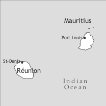

by Philip Baker and Sibylle Kriegel

The Republic of Mauritius, located about 900 km east of Madagascar in the Indian Ocean, has a total area of 2040 km² and had an estimated population of 1,288,000 in 2008. It comprises the island of Mauritius itself (1,865 km²), where the overwhelming majority of the population lives, and the dependencies of Rodrigues (109 km², ca. 40,000 inhabitants), Agalega (24 km², ca. 300 inhabitants), and the St Brandon group of islets which, though constantly visited by fishing vessels, lacks any permanent residents.
Mauritian Creole, the dominant spoken language of Mauritius and its dependencies, is spoken by everyone born in these islands as their first or additional language. It is also spoken by many thousands of Mauritians who have emigrated to other countries, mainly in western Europe and Australia. It is closely related to Seychelles Creole (see Michaelis & Rosalie 2012, this volume).
After the island was abandoned by the Dutch in 1709, it was occupied by the French in December 1721 by a few people from Reunion (then called Isle Bourbon) while awaiting two much delayed ships from France which eventually arrived in March 1722 after half the passengers, mainly Swiss troops, had died en route. None of these people came as settlers. They were joined by 30 slaves from Reunion, almost all of whom left within a year, and 65 Malagasy slaves, a third of whom quickly escaped and were never recaptured. The Compagnie des Indes wanted some Réunionnais families to move there but this did not happen because they feared that Mauritius, with two natural harbours whereas their island had none, might rapidly overtake Reunion in importance. By the end of 1725, hardly any of the Europeans who came in 1722 remained in the island, the Swiss troops having been replaced by French soldiers.
In 1726, Lenoir, head of the Compagnie’s Indian Ocean operations, proposed a new plan for the settlement of the island: military colonization. Unattached young women were to be brought from France. Soldiers who married one of them would be given land and slaves in order to become settlers. Slaves were to be shipped from West Africa, Madagascar, and India while skilled artisans were to be recruited in Pondicherry for construction work. These plans were rapidly implemented. By 1730, non-Europeans already outnumbered Europeans by a considerable margin. When appointed governor of the two islands in 1735, Labourdonnais chose Mauritius as his headquarters, reducing Reunion to provincial status, thereby confirming the fears of the Réunionnais. Languages spoken by non-Europeans in Mauritius at that time include at least Bengali, Indo-Portuguese, Malagasy, Mandinka, Tamil, Wolof, and perhaps Yoruba.1
In the thirty years from 1735, Madagascar was the main source of slaves, but slaves speaking Bantu languages had begun to be introduced from 1736 and their proportion slowly increased until they overtook Malagasy arrivals decisively in about 1765. Thereafter, Bantu slaves from East Africa accounted for the vast majority of newcomers. Small numbers of Indian slaves continued to be introduced throughout the 18th century.
The terms of transfer of ownership to Britain in 1812 safeguarded French language and culture, and discouraged any exodus of the Francophone population. A Protector of Slaves was appointed in the 1820s, bringing the realization that the abolition of slavery was inevitable, and leading many owners of domestic slaves to make the latter free citizens without waiting for abolition in 1835. Former slaves were then to be paid but required to remain on the plantations for several years. This plan failed because the wages offered were considered inadequate. Many slaves abandoned the plantations but then needed to find land where they could eke out a living. This proved difficult and some emigrated to Rodrigues, the Seychelles, and elsewhere. The plantations meanwhile found an inexhaustible, alternative source of cheap labour in India, thus sowing the seeds of long-term interethnic tension. This coincided with a boom in sugar prices, leading to a vast increase in the land under cultivation and Indian immigration on a truly massive scale. The population in 1835 was about 100,000; in the following 35 years a total of 365,000 Indian indentured labourers arrived, while only 81,000 of these had left on completion of their contracts by 1871. 68% of the population was by then of Indian descent, a proportion which has scarcely changed since. Indian immigrants brought several languages from western (Gujarati, Maharati) and southern India (Telugu, as well as the already represented Tamil) but the majority came from the Bhojpuri-speaking region of northeast India.
Chinese immigrants also began arriving in the 19th century but formed only 0.5% of the population when first identified as a separate category in 1861, and did not achieve their current proportion of around 3% until 1952.
Although some primary schools, mainly run by religious organizations, had existed since the 19th century, it was not until the 1950s that free primary education became available for all children. This had the effect of enabling every Bhojpuri-speaking child to acquire Mauritian Creole in the playground while exposing all pupils to French and English in the classroom. French remained, as before, the dominant language of the media (a radio station and several newspapers). Television, introduced in 1965, brought some increase in the use of English, but this remained little used outside the domains of education, government, and big business. Mauritian Creole was the dominant spoken language of the towns but shared this role with Bhojpuri in rural areas.
British policy in the 1960s was to divest itself of its colonies, including Mauritius. Hindus, about half the population, generally favoured independence, while most of the “general population”2 (30%) was firmly opposed, and other minorities were uncertain of where their best interests lay. Tensions came to a head in 1965 with rioting and interethnic murders leading to a state of emergency and the arrival of British troops. In the following 1967 election parties favouring independence won a clear majority and Mauritius became independent in 1968.
Sociolinguistic changes since independence include a generally more relaxed attitude to Mauritian Creole and its use in some domains where it was formerly all but taboo (e.g. banks). However, there has so far been only a marginal increase in the use of Mauritian Creole in the broadcasting and print media.
Other, more significant changes are signalled by census figures relating to language use. These have been collected since 1944 but published figures were often misleading because they recorded ethnic rather than linguistic information. Considerable improvements to data collection and analysis have been made since then. The most striking change over the period 1944–2000 as a whole is the steady increase in Mauritian Creole at the expense of oriental (Chinese and Indian) languages. The 2000 census allowed respondents to name either one or two languages as being “usually spoken at home”. The published figures indicated that 81% spoke Mauritian Creole, alone or in combination with another language, at home, while the corresponding figures for Bhojpuri and French were 18% and 6% respectively (Atchia-Emmerich 2005). No other language was used at home by more than 2% of the population.
More than 60 texts in Mauritian Creole are known from the 1730s to 1930 (Baker & Fon Sing 2007).3 All these adopt French orthographic conventions, with the partial exception of Anderson (1885) in which, e.g., French <qu> is consistently replaced by <k>. Within this period, Baissac (1880) published the first grammatical description of Mauritian Creole. Independence in 1968 brought renewed interest in Mauritian Creole’s grammar (cf. Corne (1970), Baker (1972), Moorghen (1972), Papen (1978)) and literary possibilities while, in newspaper articles, the activist Dev Virahsawmy promoted official status for Mauritian Creole and offered a phonemic orthography for it.4 Several competing writing systems have been proposed since then and, between 1968 and 2000, well over 100 books and booklets were published in one or other of them.5 This range of orthographies reflected the diversity of the population and a reluctance to accept a system promoted by a political or religious group with which they might not wish to be associated. Hookoomsing’s (2004) grafi-larmoni sought to overcome these difficulties and has proved more influential than any of its predecessors. A slightly modified version of this, backed by the Akademi Kreol Morisien, has now received official approval and was introduced into primary schools in January 2012.
Two dictionaries of Mauritian Creole were published in the 1980s (Ledikasyon pu Travayer 1984 [Mauritian Creole to English]; Baker & Hookoomsing 1987 [Mauritian Creole to English and French]) while Carpooran published the first monolingual Mauritian Creole dictionary in 2009 (2nd enlarged edition, 2011).
In the Mauritian Creole examples which follow, IPA transcriptions are given between slashes or square brackets, while the Baker & Hookoomsing (1987) orthography is used in all other circumstances, but with the additional marking of the vowels of stressed syllables with the acute or grave accents (see §4.3 for details).
Mauritian Creole has five oral and three nasal vowels but there are increasing signs of schwa becoming established as a sixth oral vowel (see Table 1).
|
Table 1. Vowels |
|||
|
front |
central |
back |
|
|
close |
i |
u |
|
|
close-mid |
e ẽ |
o õ |
|
|
open-mid |
(ə) |
||
|
open |
a ã |
||
However, a number of remarks are needed on the above:
(i) Today /e/ tends to be pronounced as [ɛ] in closed syllables and [e] in open syllables, and /o/ is similarly heard as [ɔ] and [o] in closed and open syllables, respectively.
(ii) Nasalized /ẽ/ and /õ/ are always given mid-low pronunciations [ɛ̃] (sometimes [æ̃]) and [ɔ.̃]. Nasalized /ã/ is a back vowel, [ɑ̃]. In the orthography, these are written <eṅ>, <oṅ> and <aṅ>.
(iii) Denasalization of historically nasalized vowels distinguishes Mauritian Creole from other French creoles. This occurs in two main contexts: (1) word-finally, inherited sequences of nasal vowel + voiced plosive have changed to corresponding oral vowel + nasal consonant. Such words include those derived from French from which final post-consonantal /l/ and /r/ had already been dropped, e.g. aṅsám ‘together’ < ensemble, kokóm ‘cucumber’ < concombre, as well as the short forms of variable verbs, e.g. ván, váṅde ‘sell’ < vendre; (2) word-finally following /m/, e.g. lamé ‘hand’ < la main, píma ‘chilli’ < piment.
(iv) Schwa, written <ë> here, is not heard in basilectal speech but is becoming frequent in other varieties, particularly in words which traditionally had /i/ deriving from schwa in their initial syllable, e.g. dëló ‘water’ < de l’eau. In such words, schwa is unstressed, but a stressed schwa is also heard as the reflex of English [ʌ] in a few words such as rë́gbi ‘rugby (football)’. All words in which [ə] occurs also have alternative pronunciations with [e] or another vowel so [ə] does not yet have phonemic status.
Table 2 shows diphthongs and long vowels.
|
Table 2. Diphthongs and long vowels |
|||
|
orthographic: |
Vy |
Vw |
Vr |
|
IPA i |
(ij) |
(iw) |
iə |
|
e |
ej |
(ew) |
eə |
|
a |
aj |
aw |
ɑ: |
|
o |
oj |
- |
ɔ: |
|
u |
uj |
- |
uə |
Diphthongs in parentheses are rare. Mauritian Creole equivalents of French words such as famille with final [ij] are today normally pronounced without a final glide. [iw] and [ew] are limited to words of Indic origin, e.g. séw ‘vermicelli’. The IPA representations of the realization of vowel + r in word final and preconsonantal positions are their current values. (In all other positions, r is today realized as a voiced velar fricative, [ɣ].) Old Mauritian Creole texts retain French graphic r in most positions but provide no indication of its pronunciation.
Table 3 shows the consonants of Mauritian Creole.
|
Table 3. Consonants |
||||||||
|
labial |
dental |
alveolar |
post-alveolar |
palatal |
velar |
glottal |
||
|
stops |
voiceless |
p |
t̪ |
tʃ <ch> |
[tj ~ ts] |
k |
||
|
voiced |
b |
d̪ |
ʤ <j> |
[dj ~ dz] |
g |
|||
|
nasal |
voiced |
m |
n |
ɲ <ny> |
ŋ <ng> |
|||
|
fricative |
voiceless |
f |
s |
(h) |
||||
|
voiced |
v |
z |
ɣ <r> |
|||||
|
approximant |
w |
l |
j <y> |
|||||
The dental to palatal area of the stops is rather complex and appears to be undergoing change. Traditionally /t/ and /d/ are dental (as in French) but both are palatalized, as [tj] and [dj], or lightly affricated, as [ts] and [dz], before [i] or [j]. Old texts suggest that /tʃ/ and /ʤ/ were formerly very rare but increasing numbers of non-French words containing these affricates have become established in Mauritian Creole over the past century, and the contrasts made in this area now vary from speaker to speaker. This has resulted in some minimal pairs for many speakers such as jét [ʤɛt] ‘jet plane’ and dyét [djɛt] ‘diet’. A further complication is that, in words adopted from English, initial /t/ and /d/ generally retain their alveolar pronunciation when followed by [i]. For example, tḯm ‘(sports) team’ and dḯm ‘dip switch, dipped headlights’ contrast sharply with the pronunciations of the initial consonants of e.g. tímid [tsimid] ‘timid’ and dimál [dzimal] ‘pain’ among all Mauritian Creole speakers.
There are several reflexes of the French palatal nasal [ɲ] in Mauritian Creole. In the long form6 of ganye (< French gagner) ‘get’, the most usual pronunciation is probably [gan je] (where space indicates syllable division) but several others are current including [ga ɲe] and [gæ ɲe] (or with denasalization, [ga je] and [gæ je]). In the short form, here written gany, the pronunciation is typically [gaɲ] but variants include [gæ̃j] and denasalized [gæj]. Graphic sequences of <ni> immediately followed by another vowel in French words established in Mauritian Creole have essentially the same set of variant forms as those for Mauritian Creole words of French origin containing the graphic sequence <gn> illustrated above.
Sequences of oral vowel + [ŋ] in Mauritian Creole have often been misrepresented as if they were the sequences of nasalized vowel + [g] (from which some derive historically). This is part of a more extensive phonological rule described earlier (see denasalization in §4.1) to which there has only been resistance from a very few “prestigious” words such as laṅg ‘language’. For many Mauritians, the latter contrasts with laŋ ‘angle’ (< French l’angle). In addition [ŋ] occurs in numerous words of non-French origin such as béŋkrep < English bankrupt, b(h)áŋ ‘intoxicating potion made of cannabis and milk’ < Indic bhang, kóŋgolo ‘crest (of a bird)’ < Makonde (a Bantu language) idem, váŋvaŋ < Malagasy vangovango ‘rough work’, etc.
Finally, [h] has only very marginal status. Ha occurs as a variant of sa ‘this, that’ but appears to have only limited geographic distribution. It is also found in some words of English or Indic origin as well as proper names such as Harold and Mohun, but in all cases its pronunciation is optional and appears to be rarer than its omission.
Mauritian Creole is a stress-timed language. Three kinds of syllable can be identified:
(1) Unstressable in all circumstances: These include the TAM markers (§6), subject personal pronouns (§5.1) and possessive adjectives, the articles en and la, the final syllable of long forms of verbs with both short and long forms, most prepositions, etc.
(2) Obligatorily stressed in all circumstances: These include the prefixes ré- and dé-, the emphasizer mém, the number én ‘one’ etc.
(3) Stressable: All nouns, adjectives, verbs, and adverbs contain at least one stressable syllable which may be pronounced without stress when adjacent to another word containing a stressed syllable, depending on the rhythm of delivery adopted by the speaker.
Note that stress placement can distinguish between two different words or meanings which would otherwise be represented graphically as identical, e.g. refér ‘to recover (from an ailment)’ versus réfer ‘to make or do again’; la ‘definite article’ versus lá ‘locative adverb’; kúd-kúd ‘do a lot of sewing’ versus kud-kúd ‘do a bit of sewing from time to time’, etc.
In the remainder of this article where words are cited in isolation, the vowels of obligatorily stressed or stressable syllables bear the acute accent. In example sentences, however, the acute accent marks stress with rising intonation while the grave accent marks stress with falling intonation.7 Thus these two diacritics simultaneously indicate stress and intonation contours, and render the use of graphic Ø to mark the non-existent copula unnecessary.
Mauritian Creole has the pronouns set out in Table 4.
|
Table 4. Personal pronouns |
|||
|
person |
dependent subject |
object and independent subject |
|
|
singular |
1 |
mo |
mwá |
|
2 (familiar) |
to |
twá |
|
|
2 (respectful) |
u |
ú |
|
|
3 |
li |
lí |
|
|
plural |
1 |
nu |
nú |
|
2 |
zot |
zót |
|
|
3 |
zot |
zót |
|
The essential difference between the two forms of each singular and plural pronoun is that dependent subject pronouns are obligatorily unstressed whereas the object/independent subject forms are normally stressed but their stress may be lost when adjacent to another stressed syllable.
The distinction between familiar and respectful forms of the 2nd person singular pronoun is found in early data in almost all French creoles but is absent from the majority of modern varieties. That the distinction is fully maintained in Mauritian Creole may in part be due to influence from Bhojpuri and other Indic languages which have a familiar versus respectful contrast even if it is coded on the verb (Kriegel et al. 2008).
Dependent subject pronouns can be, and frequently are, omitted where the referent is clear from context. Several examples will be found in the glossed text at the end of this article. Note also that absence of a 2nd person singular pronoun can often be interpreted as reflecting the speaker’s uncertainty as to whether familiar to or respectful u is more appropriate in a particular context.
The relative pronoun ki ‘who’, ‘which’, ‘that’ introduces relative clauses. In many environments, ki may be optionally omitted.
Note that la, generally regarded as the definite article (but see §5.6 below), obligatorily occurs NP-finally in all cases, even though it relates to tifí and gólfis in the above examples.
The relative pronoun cannot readily be omitted from an NP forming part of the predicate.
(3) Pyér fin kòz sa ar Pòl ki travày labàṅk komersyàl la
Pierre prf talk that with Paul who work bank commercial def
‘Pierre has discussed that with Paul, who works at the Commercial Bank.’
All Mauritian Creole nouns are invariable and may in consequence be interpreted as singular or plural according to context unless the indefinite article en, a preceding numeral, or the preposed pluralizer, ban, are present to provide disambiguation.
A striking feature of hundreds of Mauritian Creole nouns is that their initial consonant or syllable derives from a French article. Examples are: léd ‘help’ (< l’aide), zóm ‘man’ (< les hommes), laví ‘life’ (< la vie), lezó ‘bone’ (< les os), and dilwíl ‘oil’ (< de l’huile).
Mauritian Creole has a closed set of adjectives which precede the noun and an open set which follow the noun. Membership of the closed set is similar to, but not identical with, the French set of preposed adjectives. Mauritian Creole additions include bezer ‘despicable’ and English-derived ful ‘complete’. Note also that bel means ‘big and strong/extensive/impressive’, e.g. en bel tifi signifies a powerfully built, rather than conventionally beautiful, young woman; see also the remarks on the reflexes of French petit below.
All adjectives may be reduplicated, but reduplication gives preposed adjectives (with stress on the first occurrence of the adjective) an augmentative interpretation while this attenuates the meaning of the postposed set (with stress on the second occurrence of the adjective).
(4) en gráṅ lakáz ‘a big house’; en gráṅ-graṅ lakáz ‘a very big house’
(5) en simíz rúz ‘a red shirt’; en simíz ruz-rúz ‘a reddish shirt’
If preposed adjectives are modified in any way other than reduplication, they are placed after the noun: en lakáz byeṅ gráṅ ‘a very big house’ or en lakáz gráṅ teríb, ‘an exceptionally big house’.
The preposed French adjective petit has three different reflexes in Mauritian Creole: píti, típti and ti. All these occur in preposed position. Típti derives from the reduplication of French petit but functions as a single morpheme meaning ‘tiny’ in Mauritian Creole. Ti is best considered a diminutive prefix because it differs from adjectives on four counts: (1) It is inherently unstressed whereas all adjectives contain one stressable syllable; (2) it cannot occur as a single-word predicate; (3) it cannot be accompanied by an intensifier; (4) while two preposed adjectives cannot readily co-occur, ti can follow any preposed adjective: en zóli ti-lakáz ‘a pretty little house’.
Comparatives and superlatives are formed with a preceding pli or mweṅ: Klénsi pli zèn ki mwà ‘Clency is younger than me’; mo grámer mweṅ vyè ki mo gràṅper ‘my grandmother is younger than my grandfather’. For a superlative reading, some restriction of reference is generally indicated: Tíma pli zèn daṅ nu grùp ‘Fatima is the youngest in our group’ (lit. ‘Fatima is more young in our group’). An alternative comparative structure employs pliski or mweṅski after the adjective: li màleṅ pliski mwà ‘s/he is cleverer than me’.
Preverbs are adverbs which precede the verb but follow any TAM markers. They include áṅkor ‘still (expected to terminate soon)’, túzur ‘still (not expected to terminate soon)’, neplí ‘no longer’, záme ‘never’, nék ‘merely’, and fék ‘just a moment ago’.
Frequent adverbs include ísi ‘here’, labá ‘there’, ladáṅ ‘inside’, deór ‘outside’, astér ‘now’, tár ‘late’, byéṅ ‘in a good way’, as well as a few such as dúsmaṅ derived from French adverbs ending in -ment.
A few adverbs also function as prepositions but are obligatorily unstressed in the latter role: aṅba ‘under(neath)’, avaṅ ‘before’, apre ‘after’. Other frequent (unstressable) prepositions include lor ‘on’, pu ‘for’, and daṅ ‘in, at’.
Mauritian Creole has a preposed indefinite article en (unstressable), which contrasts with stressed én ‘one’: en lakáz ‘a house’, én lakáz ‘one house’.
Mauritian Creole also has a postposed (and clause-final) particle la which is frequently described, somewhat misleadingly, as the definite article. It derives from the second element in the discontinuous French demonstrative ce … là ‘this’. Mauritian Creole has both sa alone and discontinuous sa … la as unambiguous demonstratives, of which the latter is by far the more common. But in many instances it is difficult to decide whether la alone, which occurs with far greater frequency than either sa or sa … la, should be considered a demonstrative or definite article since, without detailed knowledge of the context, both readings are often equally plausible. A further complication is that bare nouns in Mauritian Creole can also have a definite reading. A great many such bare nouns occur in Baissac’s (1888) folktales; they are found less frequently today but are by no means rare. In addition, since the 19th century, there are examples of the 3rd person singular possessive pronoun so being additionally used as a kind of definite article; see Guillemin (2007).
The set of possessive adjectives in Mauritian Creole is the same as the set of preposed dependent subject pronouns in Table 4 except that the 3rd person singular possessive pronoun is so (from French son) not li: mo lakáz ‘my house’, to zárdeṅ ‘your garden’, so simíz ‘his shirt’, etc.
Mauritian Creole also has two genitive structures. One has the order possessed + possessor, the other order is possessor + so (zot if the possessor is plural) + possessed: lisyéṅ Sesíl and Sesíl so lisyéṅ both mean ‘Cécile’s dog’. These structures can be freely combined: lisyéṅ Sesíl so frér and frér Sesíl so lisyéṅ, both meaning ‘Cécile’s brother’s dog’.
About 70% of Mauritian Creole verbs are variable, having both short and long forms: maṅz/maṅze ‘eat’, daṅs/daṅse ‘dance’ etc. Other verbs only have one form. Variable verbs adopt their short form when immediately followed by a direct or indirect object and their long form in most other circumstances, according to purely syntactic criteria.
Mauritian Creole has six preverbal markers relating to tense, aspect and mood. They immediately precede the verb, their order with respect to each other being: ti (past marker), fin/in/’n (perfect marker), pe (progressive marker), a (indefinite future marker) and pu (definite future marker),8 plus the zero marker. In Table 5, the different markers are displayed in relation to the lexical aspect (aktionsart) of the verb. We distinguish between dynamic verbs (bàt/e ‘hit’, màṅz/e ‘eat’) on the one hand and stative (krwàr ‘believe’) and adjectival (malàd ‘(be) ill’) verbs on the other. Unmarked dynamic, stative, and adjectival verbs have the same temporal interpretation. The aktionsart distinction is only relevant because some verbs are, according to their aktionsart meaning, incompatible with some of the preverbal markers or convey other semantic nuances. So, the progressive marker in combination with states can yield inchoative meanings: mo pe malàd (‘I am becoming ill’); the perfect marker in combination with adjectival verbs can refer to a change of state resulting from a past event: So fígir in rùz. ‘His face became red’.
|
Table 5. TAM markers |
||
|
marker (French etymon) |
aktionsart |
tense/aspect |
|
Ø |
all |
simple present, habitual present, generic present, perfective past (in narrative contexts) |
|
pe (après) |
dynamic |
progressive present, immediate future |
|
adjectival |
ongoing change of state (‘become’) |
|
|
ti (était, été) |
all |
simple past |
|
fin/in/’n (finir) |
dynamic |
perfect with current relevance |
|
stative |
completed change of state with current relevance |
|
|
a/va/ava (va) |
all |
indefinite future |
|
pu (pour) |
all |
definite future |
TAM markers can be combined in a limited number of ways, as indicated in Table 6.
|
Table 6. Combinations of TAM markers |
|||
|
aktionsart |
tense/aspect |
modality |
|
|
ti’n |
all |
past-before-past |
|
|
ti pe |
dynamic |
progressive past |
|
|
adjectival |
past ongoing change of state (‘was becoming’) |
||
|
ti ava pe |
all |
counterfactual (with past reference)9 |
|
|
ti a |
all |
past conditional (indefinite) |
|
|
ti pu |
all |
past conditional (definite) |
|
Wherever the past tense has been clearly established in a narrative, by ti or an appropriate adverb, all subsequent verbs receive a past interpretation without the need to repeat ti.
Of the four types of modality identified in Kriegel et al. (2003), kapàv is used to express possibility. (There is no reflex of the French verb pouvoir.) Necessity is expressed mainly by bìzeṅ (but devèt, fòde and oblìze also occur). Bìzeṅ is used for all four types of modality, including epistemic modality.
|
Table 7. Modality |
||
|
type of modality |
construction |
examples with translation |
|
participant internal modality (possibility / necessity) |
kapàv, bìzeṅ |
Kómye kán li kapàv kùpe par zùr? ‘How much sugar cane can he cut each day?’ |
|
participant external modality (‘root') |
kapàv, bìzeṅ |
U bìzeṅ màrse pu àl traváy? ‘Do you have to walk to work?’ |
|
participant external modality, deontic (permission / obligation) |
kapàv, bìzeṅ |
U bìzeṅ al lòpital. ‘You must go to hospital.’ |
|
epistemic (uncertainty/ probability) |
bìzeṅ |
Li bìzeṅ fin gàny enpè en sòk. ‘S/he must have been a bit shocked.’ |
In epistemic uses verbal particles (pe, fin) are postposed to the modal (see Table 7), while in non-epistemic uses they are preposed (Kriegel et al. 2003).
Epistemic reading
(6) mo pà trùv mo laklè, mo bìzeṅ (f)in pèrdi li
1sg neg find poss key 1sg must prf lose 3sg
‘I don’t find my key. I must have lost it.’
Non-epistemic reading
The verbal negator pa follows the subject (noun or personal pronoun), but precedes all verbal markers:
(9) nu pà ti pe dòrmi
1pl neg pst prog sleep
‘We were not sleeping.’
The negator regularly combines with èna ‘have’, àṅkor ‘yet’ and fin ‘prf’ as p’èna ‘to lack’, ‘to not have’, p’àṅkor ‘not yet’, and pà’n ‘neg + prf’.
Mauritian Creole uses the dummy copula when predicative phrases are fronted, e.g. in questions:
(10) kúma so lakáz ète? so lakáz zòli terìb
how poss house cop poss house nice terrible
‘What is her/his house like? His/her house is very nice.’
The word order in Mauritian Creole is SVO. In spoken informal language, if the subject referent is set by the context, it can be dropped without any syntactic constraints. This technique is also productive for constructions with a passive sense: The subject position may also be left empty if the referent is indefinite and generic:
(11) si Ø mèt mwa daṅ lòt klìma mo pà pu kapàv […]
if Ø put 1sg in other climate 1sg neg fut able [...]
‘If they/ you put me in another climate, I won’t be able [to cope] [...]’
Another construction type is the promotion of the patient to subject position:
(12) sa lasán-la mèt daṅ kàn ùsi
dem ash-dem put in sugar.cane too
‘These ashes are also put into (the ground where) the sugar cane (is planted).’
A very limited group of verbs of negative physical affection allows a morphologically marked passive construction with the auxiliary gany (‘get’ < French gagner).
(13) en lisyéṅ in gany bàte
indf dog prf get beat
‘A dog has been beaten.’
There are different competing techniques for the expression of reflexive voice.
(a) The most common is for the object pronoun to be used as a reflexive marker, optionally accompanied by the intensifier mem:
(14) li ti kapàv eṅfòrm li (mèm)
he pst able inform him (self)
‘He was able to inform himself.’
(b) With body care and grooming verbs, mention of the relevant body part tends to be optional:
(15) Rájen pe ràz (so figìr)
Rajen prog shave poss face
‘Rajen is shaving (or: is getting shaved).’
(c) Traditionally poss + lekor was used as a reflexive marker. This is now rare but survives mainly in the expression zet so lekor:
(16) Fídu fin zèt so lekòr depi en pòṅ
Fidou prf throw poss body from indf bridge
‘Fidou has commited suicide by throwing himself off a bridge.’
Reciprocal voice can be expressed by a special construction using the word kàmarad. ‘friend’.
(17) sáken èd so kàmarad
each.one help poss friend
‘They help each other.’
With ditransitive verbs, the indirect object generally precedes the direct object but this order can be reversed, with the indirect object following a preposition, giving greater attention to the direct object:
(18) a. mo ti dòn Pyèr lìv la
1sg pst give Pierre book def
‘I gave Peter the book.’
b. mo ti dòn lìv la ar Pyèr
1sg pst give book def with Pierre
‘I gave Peter the book.’
Sentence coordination can be achieved by coordinating conjunctions or by simple juxtaposition. The main coordinating conjunctions are e ‘and’, be, me ‘but’, and ubyeṅ ‘or’. Mauritian Creole shows a tendency to distinguish between sentential coordination (verbal coordination) marked by e (see 19) and nominal conjunction marked by ek (see 20), even if ek is increasingly used even in contexts of verbal conjunction (see 21).
(20) pápi ek mámi prè pu àle zòt ùsi
dad and mum ready for go 3pl too
‘Dad and mum are about to go, them as well.’
Object clauses are zero-marked or introduced by ki (< French que) (including with verbs of speaking and of knowing).
Adverbial clauses are introduced by different subordinators, e.g. kàṅ ‘when’, si ‘if’, parskì/akòz ‘because’, àpre ‘after’, avàṅ ‘before’ etc.
9. Other structures
9.1 Interrogatives: total questions
Any statement may be turned into a question simply by switching the intonation on the final syllable from falling to rising pitch regardless of whether this is a stressed syllable or not.
(22) Zórz en bòṅ profesèr Zórz en bòṅ profesér?
Georges indf good teacher Georges indf good teacher
‘Georges is a good teacher.’ ‘Is Georges a good teacher?’
Alternatively, the statement can remain unchanged but be turned into a question by adding nóṅ? ‘no?’ (corresponding to English isn’t it?, etc. or French n’est-ce pas):
(23) Zórz en bòṅ profesèr, nóṅ?
Georges indf good teacher no
‘Georges a good teacher, isn’t he?’
9.2 Interrogatives: partial questions
Partial questions are those in which a noun phrase (NP) or adverbial is replaced by an interrogative element. A subject NP can be replaced by ki ‘who, what’ or the longer structure ki senla (or sanla) ki (from which the first ki is often omitted):10
An NP within the predicate is normally replaced by ki and moved to sentence-initial position, again without any change of intonation pattern at the end of the sentence:
(25) a. èna en pagòd Sanmàrs
have indf pagoda Champ.de.Mars
‘There is a pagoda at Champ de Mars.’
b. ki èna Sanmàrs?
what have Champ.de.Mars
‘What is there at Champ de Mars?’
If the verb in the sentence in which the NP in the predicate is preceded by a verb in its short form (see §6), the replacement of the NP by ki and its movement to sentence initial position also requires the verb to adopt its long form:
(26) a. so sér apel Àyvi
poss sister call Ivy
‘Her sister is called Ivy.’
b. kí so sèr apèle?
what poss sister call
‘What is her sister called?’
In verbless (zero copula) sentences, moving the NP replaced by ki to the front also requires the introduction of the dummy copula ète (see also example (10)):
9.3 Focus
Focus is generally achieved by suffixing mem to the emphasized item. With an object or independent subject pronoun, this can be glossed as ‘self’, e.g. li-mem ‘himself’, nu-mem ‘ourselves’. Additional focus can be achieved by fronting this:
With pronouns, focus can also be achieved by placing the stressed independent subject pronoun before the dependent one:
The first two above possibilities are also available for object NPs, but mem is perhaps best translated ‘real’ or ‘really’ in most cases:
Fronting is not available for focusing subject NPs but mem is available for emphasis and additional prominence is achieved by adding the appropriate resumptive pronoun before the mem:
Due to the wide range of origins of its non-Francophone population throughout its history, Mauritian Creole’s vocabulary is drawn from many sources. Baker (1982b) identified 1535 words of apparent non-French derivation. Given that the Baker & Hookoomsing (1987) dictionary contains entries for some 15,000 individual words (excluding compounds), that suggests that fully 10% of the lexicon is of non-French origin. However, 554 of these are from English and obviously postdate the transfer to British rule in 1812. The second largest source is Indic languages (292 words) and, while such languages were marginally represented in the 18th century, there can be no doubt that the majority of these date from 19th-century Indian immigration. Words for which no etyma have yet been identified form the third largest category (257). Together, these three categories account for 72% of the non-French lexicon.
Lesser, but nonetheless important, sources include Bantu languages (collectively), Malagasy, and Tamil, each with between 60 and 100 items. Smaller sources, each accounting for fewer than 20 items, are Chinese, Manding, Portuguese, Wolof, and languages of the Benin area.